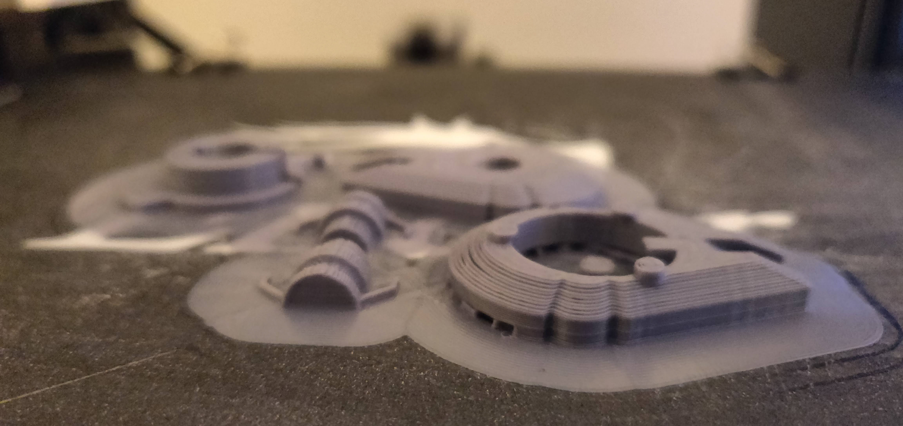

Tangible Asteroids
A new Kinder™ toy integrating the virtual and physical

Inspired by the Millennium Falcon, I designed and fabricated a novel spaceship toy that functions as a physical agent in a mobile game of asteroids. It was purchased by Ferrero Company and will appear in future distributions of Kinder Joy®.

The project was created during a course about toy design supervised by Yaron Loubaton at Bezalel Academy. The mobile app was developed with my friend Omer Zadok.
An album of prototypes and other course outcomes is available here, and if you like 3D stuff you can view the spaceship model here.

-2.jpg)
-2.jpg)